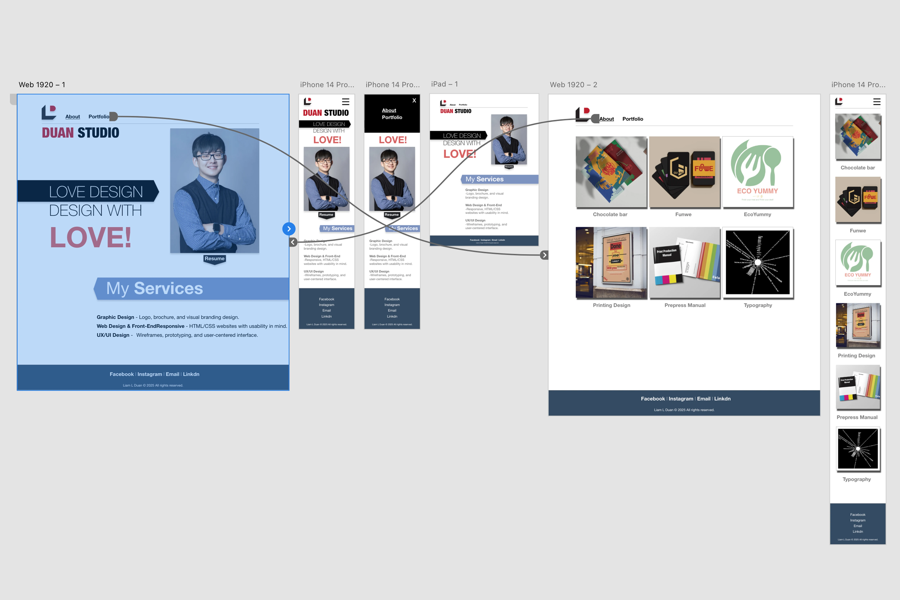
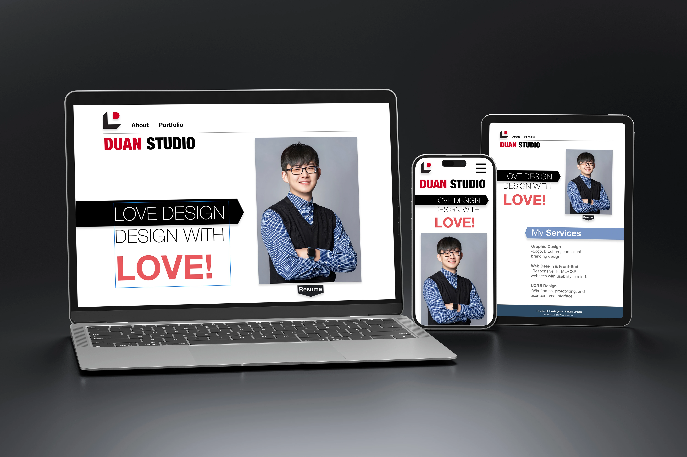
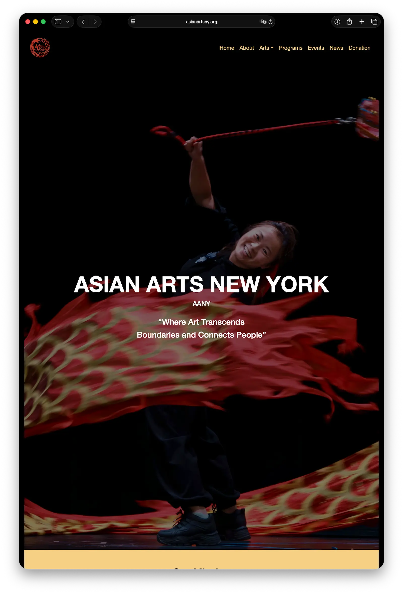
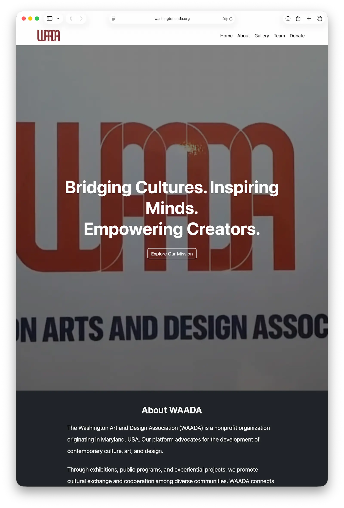

Website Design
This project showcases my website design and front-end development work for nonprofit and cultural organizations. The focus is on communication clarity, responsive structure, visual consistency, and maintainable front-end systems that support real organizational needs.



Asian Arts New York
For Asian Arts New York, I contributed website design, front-end development, and ongoing visual support to help the organization present programs, events, and cultural initiatives in a clear and engaging way.
The website needed to communicate event information effectively while maintaining a professional identity that reflects the organization’s cultural mission. My work focused on content hierarchy, responsive layout, visual consistency, and easier long-term maintenance.
Design Focus
- Clear presentation of cultural programs and event information
- Responsive page structure for desktop and mobile viewing
- Stronger visual hierarchy for announcements, posters, and call-to-action areas
- Maintainable front-end structure for future updates

WAADA
For the Washington Art and Design Association (WAADA), I supported the development of a cleaner and more structured web presence that helps the organization share its mission, events, team information, and community work.
The goal was to create a site that feels visually organized and easy to navigate while still being flexible enough for ongoing content updates. I used front-end design principles to improve readability, page flow, and consistency across different sections of the site.
Design Focus
- Improved page organization and navigation clarity
- Consistent visual design across informational and event pages
- Support for storytelling through layout, imagery, and section structure
- Flexible front-end system for nonprofit communication needs
Project Summary
Across both projects, my role combined design thinking and practical front-end execution. I focused on building websites that are visually clear, easy to update, and better suited to the communication goals of nonprofit organizations.